一、开场：货币政策三块拼图与本节定位
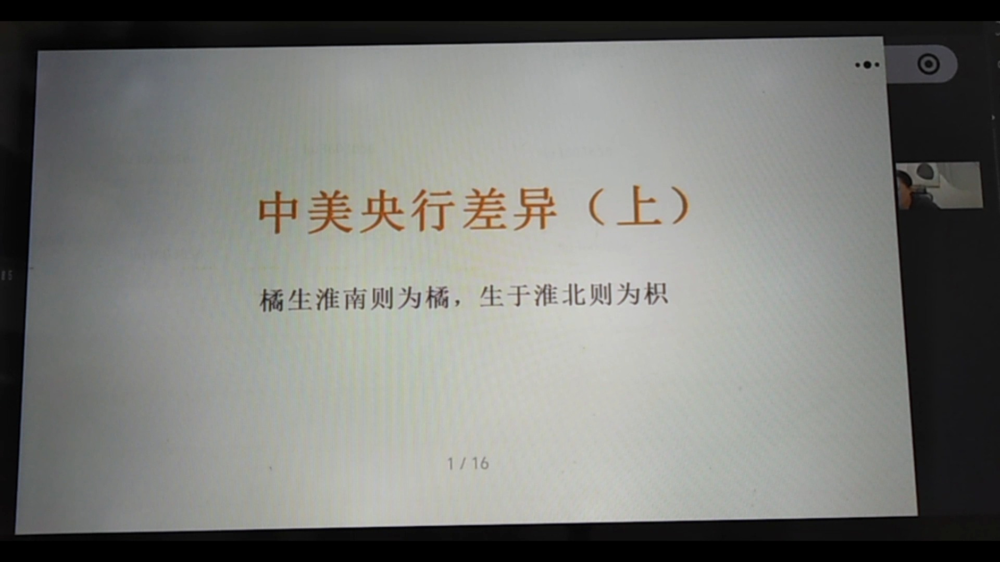
小爆姐开场说明课程结构：货币政策的内容分三块——货币、利率、汇率。汇率系列已经讲完，本节是插播课，专门讲"中美央行差异"，分上下两节：
- 本节（上）：讲清楚两家央行制度底色、行为模式、目标函数的根本差异；
- 下节：继续讲下半部分，随后进入货币政策总结课，把三块拼图串成整体。
为什么要专门插播这一课？因为理解了美联储与中国央行是两种完全不同的"物种"，才能解释过去十几年里"为什么美国一放水全球资产就涨、中国放水却总要"精准滴灌""这一系列现象。
二、权力来源：美联储的"契约" vs 中国央行的"使命"
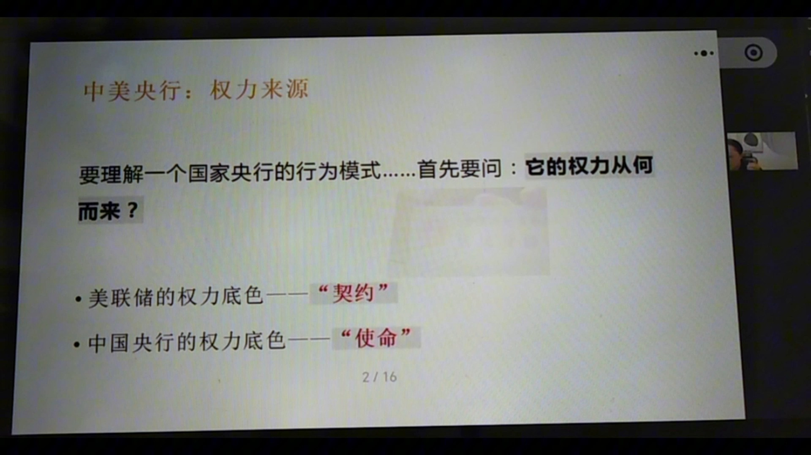
要理解一家央行的行为模式，首先要问：它的权力从何而来？两家央行的权力底色完全不同：
| 维度 | 美联储 | 中国央行 |
|---|
| 权力底色 | "契约"——权力来自法律授权与制度契约 | "使命"——权力来自国家治理的使命要求 |
| 法律基础 | 《联邦储备法》：法定任务只有两个——稳就业 + 稳通胀 | 国务院组成部委，在中央金融委员会顶层设计下运行 |
| 对谁负责 | 对法律负责，不向总统汇报（鲍威尔的独立性是公开例证） | 金融是国家治理工具，是国家意志在金融体系中的传导执行者 |
| 卖的是什么 | 卖"规则"而不是"政策"——规则不变，市场就信他 | 卖"方向"——阶段性战略目标驱动（出口创汇→去库存稳预期→金融强国/新质生产力） |
为什么美联储要"独立"？——时间不一致性问题
经济学里有一个著名的时间不一致性问题：如果把印钞权交给政客，政客为了眼前的选票会倾向于"先放水刺激、把通胀留给以后"，长期看信用必然破产。所以货币权力必须交给不参选、不讲政治、只看数据的经济学家——这就是央行独立的逻辑起点。
一句话框架：美联储是"政治绝缘体"，用规则换市场的信仰；中国央行是"国家治理的金融抓手"，用使命承接国家战略。权力底色不同，行为逻辑必然不同。
三、决策风格：数据依赖 vs 跨周期调节
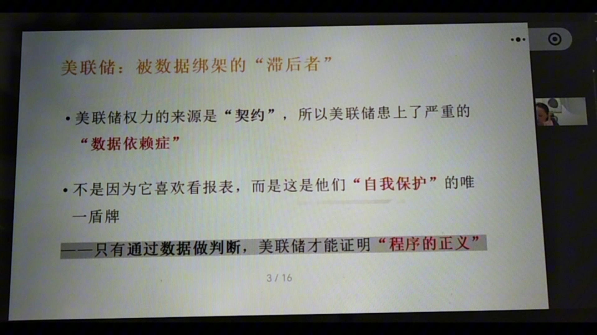
美联储：数据依赖（Data Dependent）
- 契约底色→程序正义：决策必须可被审计，每一步都要讲得出理由；
- 理事任期14年，远超总统任期，制度上隔绝政治周期；
- 缺点=滞后性：只认已发生的数据，宽松容易催泡沫、紧缩容易过度；
- 对市场是红利：透明、可预期、可复制→美元资产获得"制度溢价"；
- 行为准则：可以犯"方向错"，不能犯"越界错"——超出授权范围是最大的错。
中国央行：跨周期调节
- 任务清单很长（增长、物价、汇率、防风险、配合国债、防空转、引导资金入芯片高科技等），多目标叠加；
- "择机行事"：降准放水与严查资金违规入市可以并存，同一时期既松又紧，看的是结构性；
- 结构化：从"大水漫灌"转向"精准滴灌"——工具箱里有PSL、科技再贷款、碳减排支持工具等定向工具；
- 前瞻性强、纠错快：2020年全球放水，中国次年5月就边际收紧防空转，抢跑全球；
- 政策博弈难度指数级：读政策通稿要抠字眼——措辞顺序、笔墨多少、是否单列一段、提了几次，都是信号。
对比：美联储是"不见兔子不撒鹰"——没看到数据就不动；中国央行是"平衡大师"——永远在多目标之间动态找平衡，核心艺术在权衡。
四、中国央行：多目标平衡与"择机行事"
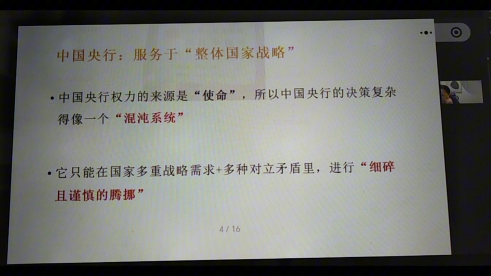
这一页把中国央行的任务清单完整展开：
- 增长、物价、汇率——传统三大目标；
- 防风险、配合国债发行、防空转——金融稳定与财政配合目标；
- 引导资金进入硬科技（芯片、高科技）——结构性/产业政策目标。
"择机行事"的含义
目标太多且互相冲突时，就没有"教科书最优解"，只能择机：根据当下最紧迫的矛盾选择发力方向。例如同一时期可以"降准放水"的同时"严查资金违规入市"——这不是自相矛盾，而是总量宽松+结构管控的组合拳。
为什么读政策要抠字眼？
因为目标多、工具杂，措辞本身就是政策信号：
- 措辞顺序：把"稳汇率"放在"稳增长"前面还是后面，说明当期优先级；
- 笔墨多少：哪个目标用了更多字数展开，哪个就是重点；
- 是否单列一段：单列=升级，并入其他段落=降级；
- 提的次数：同一表述反复出现，是在向市场"重复强调"。
方法论：看中国央行，第一件事是数清楚他手里现在有几个目标、谁排在最前面——目标顺序变了，行为就变了。
五、两国各自的"难题"：财政主导 vs 金融供给侧改革
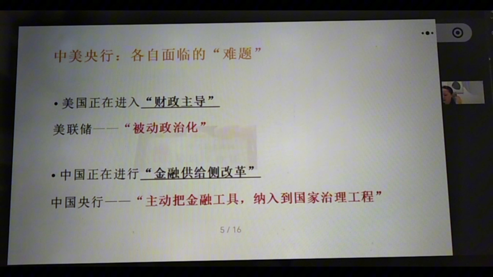
美国的难题：正在进入"财政主导"，美联储"被动政治化"
- 美国国债/GDP > 120%，高利率下利息支出正在压垮财政；
- 财政赤字巨大→必须靠发债→利率不能太高（否则利息爆炸）→美联储被迫配合财政；
- 独立性被逐步蚕食：不是被法律剥夺，而是被现实约束"被动政治化"。
中国的难题：正在进行"金融供给侧改革"
- 旧体系依赖两条腿：房地产=信用扩张、外汇=资产锚定；现在两条腿都在换；
- 改革方向：从锚定房地产/外汇，转向锚定国债 + 实体产业信用；
- 金融资源被主动引导向产业升级、新质生产力、硬科技——中国央行是"主动把金融工具纳入国家治理工程"。
宏观研究的本质：研究最有权力的那些人——想守住什么、怕失去什么。美国的权力中心现在怕财政爆炸，中国的权力中心现在想换引擎。
六、目标函数：线性极值题 vs 多维博弈棋局
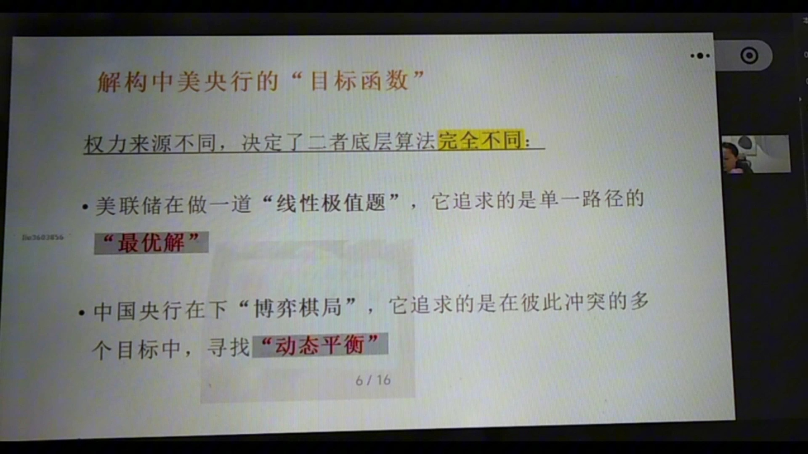
| 维度 | 美联储 | 中国央行 |
|---|
| 目标函数 | 线性极值题：就业 vs 通胀，找最优解 | 多维博弈棋局：增长/物价/汇率/金融稳定/结构转型/财政配合互相冲突 |
| 解题方式 | 教科书式"大开大合"：加息一路加、降息一路降，直到通胀受控或衰退出现 | 无最优解，动态平衡=权衡的艺术，走走停停、细碎调整 |
| 比喻 | 钢铁直男看仪表盘开车 | 拿手术刀的医生 |
| 利率形态 | 大起大落，方向明确 | 细碎调整（降0.1个点都要预期很久） |
现实约束：美国利率仍处于高位（3.5/3.75），锁死了中国的降息空间——利差倒挂下，中国不敢大幅降息，否则资本外流压力陡增。
中国阶段目标会变：2015-16稳汇率 → 2017-18防风险 → 2020保就业 → 现在高质量发展、调结构、防空转。目标顺序一直在变，行为也随之切换。
七、美联储解题：数据依赖的"钢铁直男"
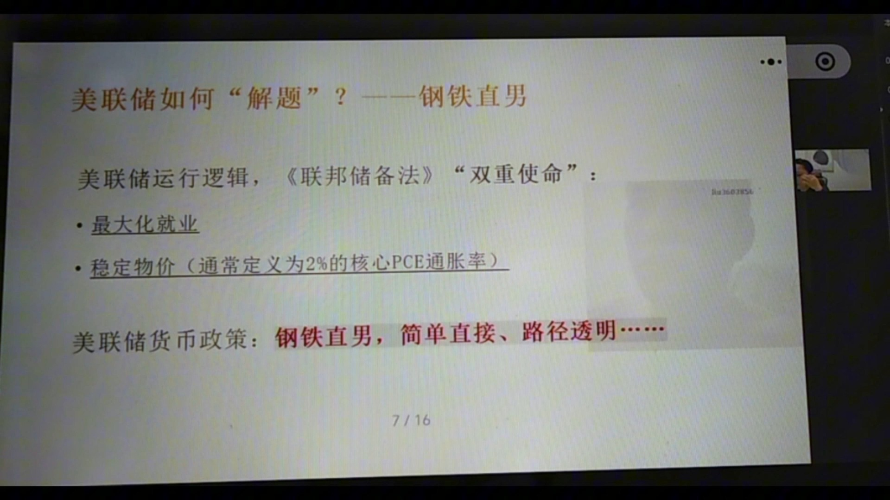
美联储的DNA里写着一句话：失业率和通胀率此消彼长。解题思路非常"直男"：
- 只认数据：非农、CPI、PCE通胀率，数据到了才动；
- 开卷考试：规则透明、路径可预期，市场几乎可以抄作业；
- 大开大合：通胀高就一路加息（哪怕美股跌20%也不停），衰退来了就一路降息；
- 滞后性风险：因为只盯已发生的数据，宽松容易吹泡沫、紧缩容易下重手——2021-2022年的通胀就是"太晚行动"的代价。
实操口诀：预测美联储=盯数据（非农、CPI、PCE），不要盯政客表演。通胀高位时，美股跌20%也可能继续加息——数据说了算，市场情绪不算。
八、中国央行解题：多目标平衡的"平衡大师"
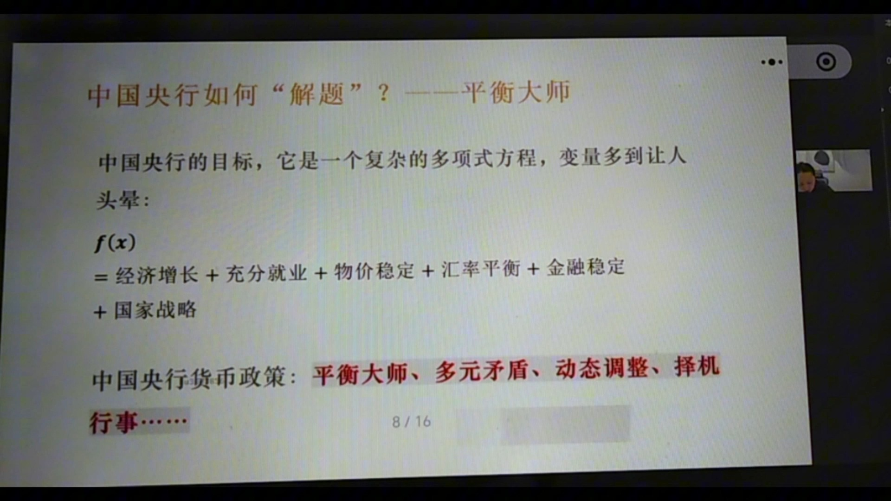
中国央行没有"单一最优解"，它的解题动作是在所有目标之间找平衡：
- 总量工具+结构工具并用：降准降息（总量）与PSL、科技再贷款、碳减排工具（结构）同时在场；
- 动态再平衡：今天保增长、明天防风险、后天防空转，优先级随形势切换；
- 跨周期调节：不只看当下，还看下一个周期的"后遗症"——所以2020年全球放水时，中国次年就边际收紧防空转；
- 政策底思维：防风险优先时，经济下滑也不会无条件强刺激——"不刺激"本身就是一种态度。
政策底什么时候出现？当多目标极端冲突、系统性风险即将爆发时，政策会来得非常快、非常重——案例：2024年"924"那一波。政策底出现之前，市场只能熬。
九、中性利率：算出来的 vs 引导出来的
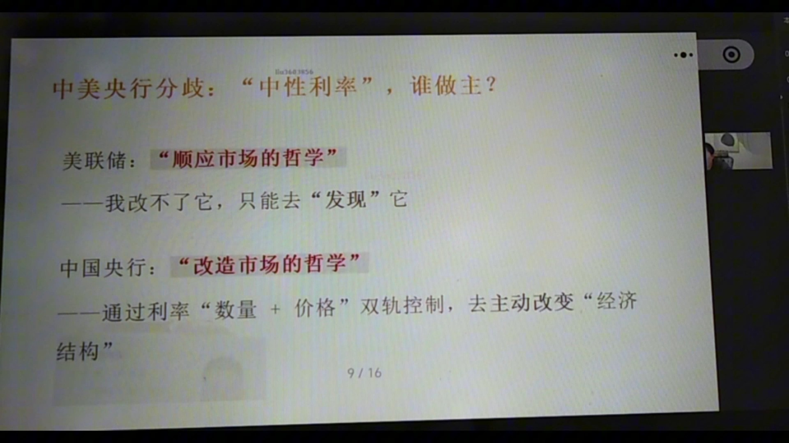
中性利率（R-star）——既不让经济过热、也不让经济过冷的利率水平。两家央行对它的态度截然相反：
| 维度 | 美联储 | 中国央行 |
|---|
| 中性利率是什么 | 算出来的：由人口结构、生产率等长期变量决定，客观存在 | 引导出来的：利率是资源配置的指挥棒，可以主动塑造 |
| 对市场的态度 | 顺应市场，中性利率只能发现、寻找，不能对抗 | 改造市场：不满足于接受中性利率，用利率数量、价格双轨控制改变经济结构 |
| 操作逻辑 | 把政策利率调到中性利率附近 | 先定5%增长目标，货币配合——目标定利率，而不是利率定目标 |
| 微观体现 | — | 不想要的方向借不到钱（实际利率≈无限大）；想要的方向用定向工具压成本 |
本质差异：美联储把利率当"结果"（经济状态的反映）；中国央行把利率当"工具"（引导资源流向的指挥棒）。一个顺应市场，一个改造市场。
十、两副眼镜：看数据 vs 看"政策底"
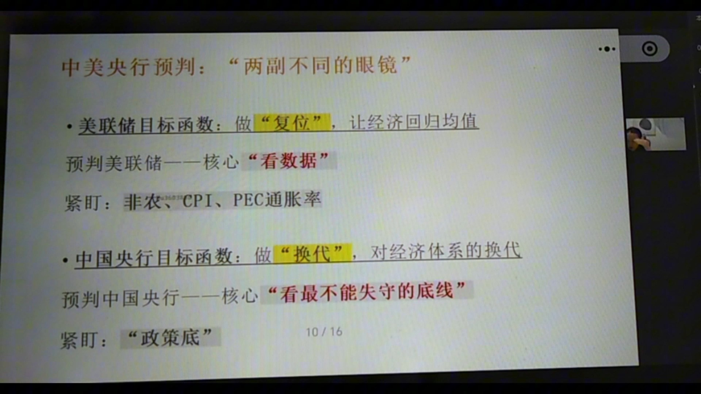
| 维度 | 预判美联储 | 预判中国央行 |
|---|
| 目标函数 | 做"复位"——让经济回归均值（钟摆） | 做"换代"——对经济体系进行换代（外科手术） |
| 预判核心 | 看数据 | 看最不能失守的底线 |
| 紧盯指标 | 非农、CPI、PCE通胀率 | "政策底" |
看美联储：核心看数据，不看政客表演
- 通胀高位时，美股跌20%也可能加息——数据决定，情绪不算；
- 美联储的每一步都写在数据里，跟着数据走就是跟着美联储走。
看中国央行：核心看"底线"和"政策底"
- 看最不能失守的底线：防风险优先时，经济下滑也不无条件强刺激；
- 政策底出现=多目标极端冲突/系统性风险即将爆发，此时政策会非常快、非常重（2024年924案例）；
- 政策底之前：市场只能熬，别急着抄底。
十一、传导机制：金融市场优先 vs 银行信贷优先
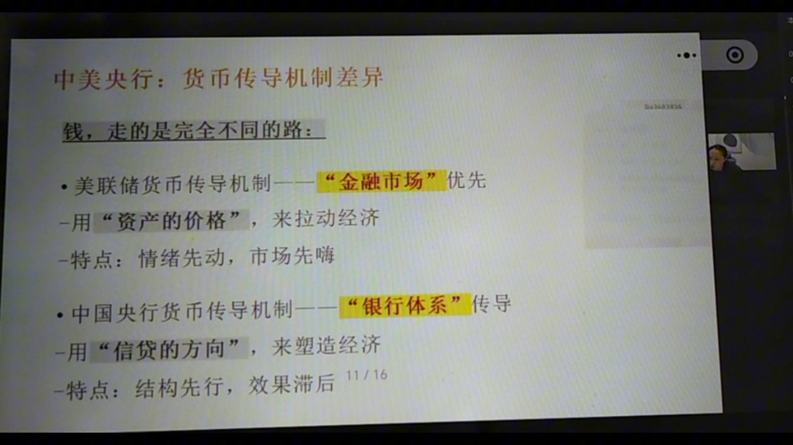
钱走的是完全不同的路——这是两家央行最"技术"也最本质的差异：
| 维度 | 美联储 | 中国央行 |
|---|
| 传导核心 | "金融市场"优先 | "银行体系"传导 |
| 机制 | 用"资产的价格"拉动经济 | 用"信贷的方向"塑造经济 |
| 路径 | 降息→钱直接进股市债市→资产价格↑→账面财富↑→消费信心→需求→企业盈利→就业（财富效应） | 基础货币经"金融机构再贷款"进银行体系→按指导方向放贷→信贷方向塑造经济结构 |
| 特点 | 情绪先动、市场先嗨（羊群效应） | 结构先行、效果滞后（链条长） |
| 危机形态 | 金融市场崩盘（财富链条断裂） | 债务违约/信用断裂（风险积累在银行资产负债表） |
一句话：美国降息先富"持有资产的人"（账面富贵再外溢）；中国放水先走"银行信贷管道"，按方向放贷、效果慢但能调结构。看美国盯股市，看中国盯社融。
十二、放水逻辑：牵马到河 vs 水管到田
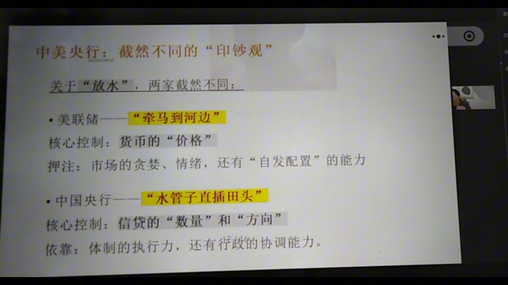
关于"放水"，两家截然不同：
| 维度 | 美联储——"牵马到河边" | 中国央行——"水管子直插田头" |
|---|
| 生意模式 | 批发商生意：买国债投放基础货币、压住拆借利率后收工 | 管到零售端：批发价、批发量、货送给谁都要管 |
| 核心控制 | 货币的"价格" | 信贷的"数量"和"方向" |
| 押注/依靠 | 押注市场的贪婪、情绪与"自发配置"能力——完全市场化 | 依靠体制执行力 + 行政协调（窗口指导、MPA考核、定向再贷款/再贴现、信贷占比要求） |
| 效果 | 效率高、易催泡沫 | 见效慢，但能调结构 |
本质：美联储只控制"价格"（利率），把资金去向交给市场自己配置；中国央行连"方向"都要管——这是两种完全不同的国家-市场关系。
十三、美联储货币传导路径：财富效应的赌局
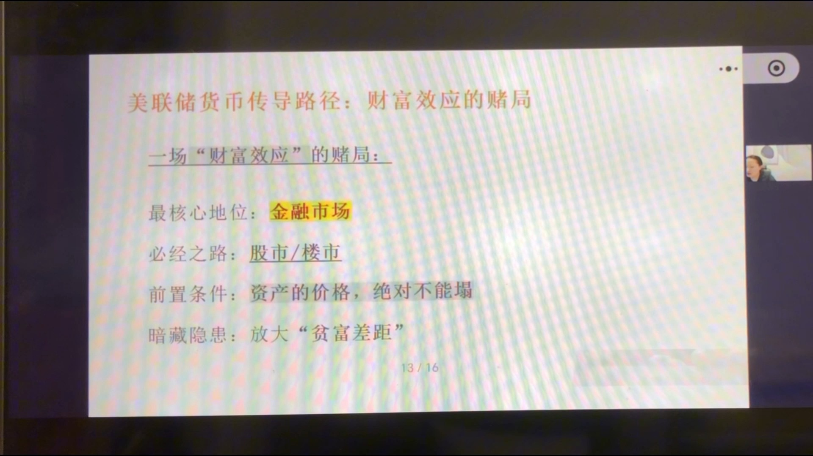
把美联储的传导链条展开：
- 降息 → 美债收益率↓ → 折现率↓ → 风险资产估值↑（股票、房子）
- 资产价格↑ → 账面财富↑ → 有钱人敢花 → 消费↑
- 消费↑ → 企业盈利↑ → 就业↑ → 经济循环继续
三个关键判断
- 股市楼市是必经之路，不是副产品：美联储的宽松必须先把资产价格打上去，财富效应才启动——所以美联储对美股高度敏感；
- 前置条件=资产价格不能塌：如果股市系统性崩盘（财富效应被掐断），利率降到0也带不起经济；
- 美股不只是晴雨表，是发动机本身。
副作用：财富分配
放水→先到持有资产的有钱人，再通过溢出效应到穷人→基尼系数被放大。"先制造账面富贵、再等它外溢"是美联储放水的标准路径。
十四、中国央行货币传导路径：信贷的洪流
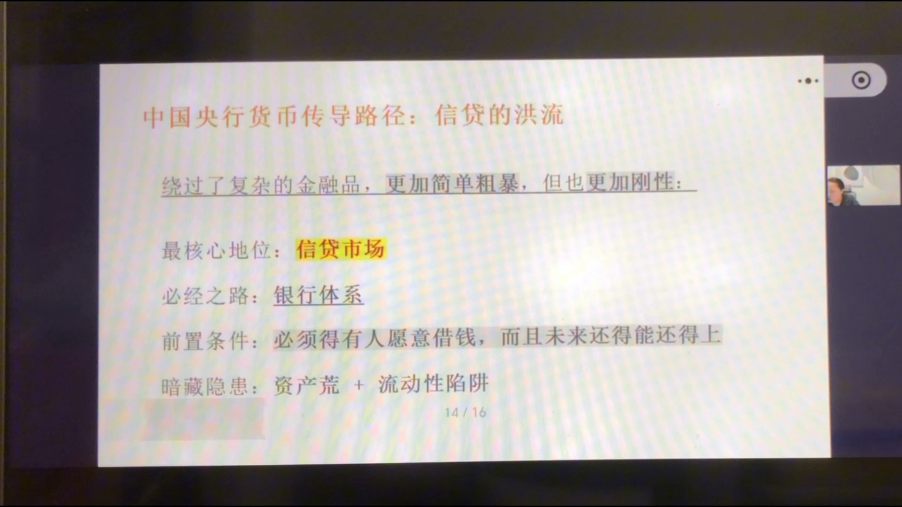
旧模式：信用驱动、投资拉动
- 央行投放 → 窗口指导 → 地方/国企/开发商拿到钱；
- 投向基建、地产 → 工资+物料 → GDP快速拉升；
- 核心观测指标=社融（增量信用）：社融增速同比拐头 → 周期股提前动。
央行财政手拉手能迅速拉GDP，但饮鸩止渴。
致命伤：必须有人愿意借钱、且还得起
- 现在房地产见顶 + 地方平台空间锁死 → 没人借 → 宽货币、紧信用；
- 钱在体系里空转 → 银行买国债 → 前两年国债火爆（机构是大头）；
- 现状= 资产荒 + 流动性陷阱：钱多，但没有能产生回报的资产、也没有愿意加杠杆的主体。
为什么"放水没用"？美国放水靠市场自己找去处（牵马到河）；中国放水要靠"水管到田"，但田里没人要水——信用创造不出来，流动性就困在银行体系里。
十五、美元潮汐 vs 中国脉冲：从黄金搭档到相互掣肘
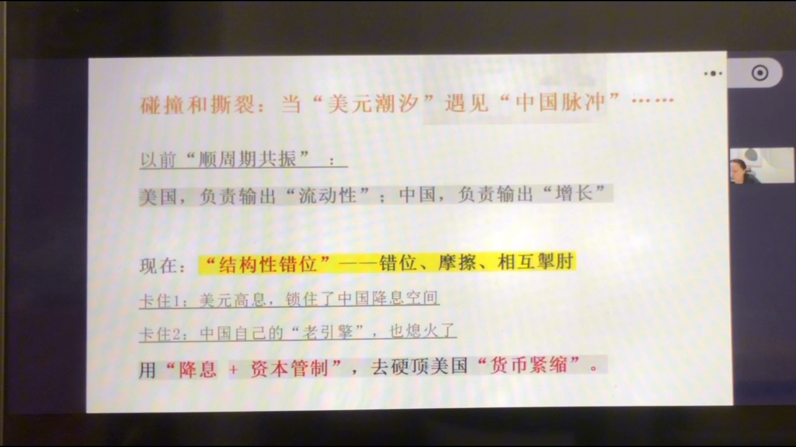
以前：顺周期共振——黄金搭档
美国负责输出"流动性"，中国负责输出"增长"。2002-2012年左右，两家配合默契：美国放水提供全球资本，中国承接产能与需求，共同做大蛋糕。
现在：结构性错位——碰撞、摩擦、相互掣肘
- 卡住1：美元高息，锁住了中国降息空间——利差倒挂，中国货币政策施展不开；
- 卡住2：中国自己的"老引擎"（地产）熄火了——旧的增长动能消失，新引擎还没长成；
- 应对：用"降息 + 资本管制"，去硬顶美国的"货币紧缩"。
投资含义：中美现在是"水和面"的关系——深度绑定又互相拉扯。不能单看一国：看美国的数据，看中国的政策底，两边合起来才是完整拼图。
十六、总结：两套循环系统与收尾
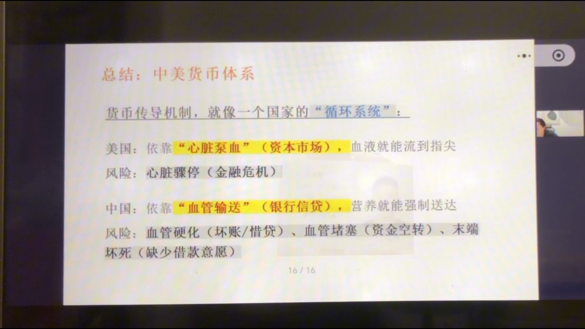
两套循环系统
| 维度 | 美国 | 中国 |
|---|
| 系统核心 | 资本市场是心脏：心跳强→血液到全身；系统性风险=心脏骤停 | 银行信贷体系是血管网络 |
| 慢性病 | — | 血管硬化=银行惜贷；血管堵塞=钱在机构间空转；末端坏死=没人愿意借、没人消费 |
| 信仰 | 笃信财富效应：先制造账面富贵，再外溢 | 笃信筑巢引凤：先修路修厂搭产业链基建，再等回报 |
| 时间观 | 透支未来（先花钱后还） | 挤压当下（内卷、先苦后甜） |
收尾金句
- 中美是水和面的关系，深度绑定，投资不能单看一国；
- 看美国看数据，看中国看"政策底"、抠字眼；
- 下节课讲中美央行差异（下），随后进入货币政策总结课。
课程知识卡片（专业版）
以下为课程配套的专业版知识卡片，标题为"货币政策第15期：中美央行差异（上）——契约vs使命、财富效应vs结构引导"，汇总了本期核心知识点的完整框架。

专业版卡片文字摘要
- 知识点1：权力底色——契约 vs 使命。美联储=契约：权力来自《联邦储备法》，法定任务仅稳就业+稳通胀，不向总统汇报，卖的是规则而非政策，规则不变市场就信他。中国央行=使命：国务院组成部委、在中央金融委员会顶层设计下运行，金融是国家治理工具，是国家意志在金融体系中的传导执行者，阶段性战略目标（出口创汇→去库存稳预期→金融强国/新质生产力）。实践运用：理解央行行为先问权力从何而来——美联储看法律边界，中国央行看国家战略方向。
- 知识点2：决策风格——数据依赖 vs 跨周期调节。美联储（不见兔子不撒鹰）：决策可被审计、程序正义，理事任期14年；缺点滞后性（宽松催泡沫、紧缩过度）；对市场是红利——透明可预期可复制，美元资产获制度溢价；可以犯方向错不能犯越界错。中国央行（平衡大师）：任务清单长且互相冲突，择机行事，结构化精准滴灌（PSL/科技再贷款/碳减排），前瞻性强纠错快（2020年全球放水、中国次年5月边际收紧防空转）；读政策通稿要抠字眼（措辞顺序/笔墨/是否单段/提的次数）。实践运用：美联储看数据到点才动，中国央行看目标优先级动态权衡。
- 知识点3：传导机制——金融优先 vs 银行信贷优先。美联储=金融市场优先：用资产价格拉动经济，情绪先动市场先嗨；中国央行=银行体系传导：用信贷方向塑造经济，结构先行效果滞后。美国危机=金融市场崩盘（财富链条断），中国风险=债务违约/信用断裂（风险积累在银行资产负债表）。实践运用：看美国盯股市（财富效应发动机），看中国盯社融（信用创造方向）。
- 知识点4：放水逻辑——牵马到河 vs 水管到田。美联储=牵马到河边：批发商生意，买国债投放基础货币压拆借利率后收工，完全市场化，押注市场贪婪与自发配置；中国央行=水管子直插田头：批发价/批发量/货送给谁都管（窗口指导+MPA考核+定向再贷款+信贷占比要求）。美联储控制价格、中国控制方向数量；效率高易泡沫 vs 见效慢能调结构。实践运用：市场化放水先富资产持有者，结构性放水慢但能换引擎。
- 当前困境——美元潮汐 vs 中国脉冲（结构性错位）。过去顺周期共振：美国输出流动性、中国输出增长（黄金搭档2002-2012）；现在结构性错位：卡住1=美元高息锁住中国降息空间，卡住2=中国老引擎（地产）熄火；应对=降息+资本管制硬顶美国货币紧缩。资产荒+流动性陷阱：钱多但没有能产生回报的资产、没有愿意加杠杆的主体；政策"拧巴克制"，夹缝中求平衡。实践运用：别套美国大水漫灌资产普涨逻辑，核心是中国在换引擎、精准滴灌，钱流向硬科技/先进制造。
- 课程总结：美联储=钢铁直男看仪表盘开车（数据依赖、大开大合、复位回归均值）；中国央行=拿手术刀的医生（多维权衡、换代手术、结构先行）。过去黄金十年（共振），现在掣肘困局（错位）。两副眼镜：看美联储看数据（非农/CPI/PCE），看中国央行看政策底、抠字眼（多目标极端冲突/系统性风险将至时政策会非常快非常重——2024年924案例）。
课程知识卡片（极简版）
以下为极简版知识卡片（副标题：扒一扒中美"央妈"的心思有何不同），用问答形式快速回顾核心概念。
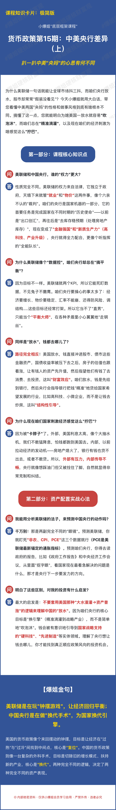
极简版卡片文字摘要
- Q：中美央行，权力性质有什么不同？
A：美联储像"六亲不认的裁判"——权力来自法律契约，只认稳就业、稳通胀两个任务，不向总统汇报；中国央行像"全能队长"——使命驱动，是国家意志的金融抓手，要管增长、物价、汇率、防风险、引导资金进硬科技，目标一大堆。
- Q：两家央行，谁更"稳"？
A：美联储是"数据控"——不见兔子不撒鹰，数据到了才动，大开大合（加息一路加、降息一路降）；中国央行是"平衡大师"——多目标之间动态权衡，走走停停、细碎调整，核心艺术在权衡。
- Q：放水之后，钱都去哪了？
A：美国走金融市场——降息→资产涨价→有钱人账面富贵→消费外溢（财富效应），所以美股是发动机本身；中国走银行信贷——水管到田，按指导方向放贷（基建、硬科技），结构先行、效果滞后，看社融。
- Q：为什么中国的刺激看起来这么"拧巴"？
A：因为被卡脖子——美元高息锁死降息空间、地产老引擎熄火，钱多但没人借（资产荒+流动性陷阱）。不是不想大水漫灌，是"水管到田但田里没人要水"。
- Q：怎么预测美联储和中国央行？
A：预测美联储盯非农、CPI、PCE，数据说了算、政客表演不算；预测中国央行读政府工作报告、抠字眼——措辞顺序、笔墨多少、是否单列一段、提了几次都是信号，还要盯"政策底"（多目标极端冲突、系统性风险将至时政策会来得非常快非常重）。
- 爆姐金句："美联储玩的是钟摆游戏（复位），中国央行做的是换代手术（换引擎）。"别把美国"放水→资产普涨"的逻辑套到中国——中国现在干的是精准滴灌、换引擎，钱流向硬科技和先进制造。